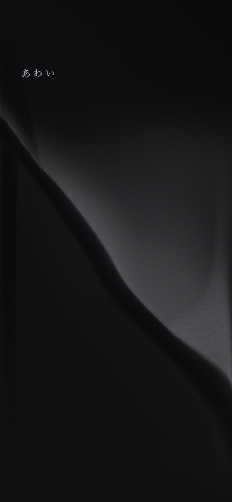
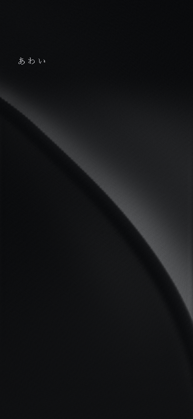

AWAI / G2-A2 / MODEL STUDY
膜の動きから、計算を変える。
旧Smoothを保存し、変形計算を粗い膜格子へ置き換えました。静止美術、黒の階調、左上の照明、入力、A/B、G1比較は維持しています。
圧縮を抑える構造は有効です。一方、稜線の移動は旧Smoothより小さく、反応は沈みと陰影が中心です。新方式が全体として優位か、本番の視認性を満たすかは未承認の研究試作です。
同じ接触位置・荷重で比べる
面UV (0.42, 0.55)、荷重1、B、Full、DPR1。荷重1は共通の入力値です。異なるモデルなので、旧Smoothの指定変位とGridの局所力が物理的に同じ力であることは保証しません。Gridの最大画像は固定300ステップ後の状態です。




画像をタップして原寸で確認できます。静止・復元のGrid／Smooth画素差は0。旧Smoothの保存画像との比較は最大1/255以内です。光オフでも共通の照明・陰影は残ります。
接触から、復元まで
0.6秒の静止後、同じ座標へ2.4秒の荷重を加え、自然に復元するまで収録しています。追加光はオフ。PC／スマホ寸法のブラウザ収録で、スマホ実機の撮影ではありません。
復元速度の違いも含めて比較してください。
同時再生には端末による開始のずれ・制限があります。動画が開く場合は共有メニューから保存してください。スマホ用の保存ページ →
圧縮と移動量の比較
計測値を読み込み中。
Gridの中央接触では、投影面積と一方向の圧縮は大きく改善しました。繊維を狭い領域へ押し込む指定変位を使わず、距離制約が伸縮を抑えます。旧Smoothの締まった谷は今回の比較画像で弱まっています。
ただし、横・縦の稜線移動は約2px程度です。説明なしで「膜が動いた」と認識できるかには課題が残ります。沈みはPC約4.2%・スマホ約3.3%の画面高さですが、奥行きなので同じ量が画面上で移動するわけではありません。
定義と改善していない指標
501個の同じ稜線UV点を追跡。全曲線の投影曲率は画面比率を補正した画面高さの逆数で、画面外と静止稜線も含みます。PCではGridの全曲線最大曲率62.78は旧Smooth27.35より高い一方、無接触63.01とほぼ同じです。旧Smoothの大きな変位が稜線全体を変えるため、この値だけで新しい鋭い谷が増えたとは判定できません。
接触が追加した沈みのHessian RMSはPC 0.646 → 1.672、スマホ1.048 → 3.884と増えています。今回のGridは局所沈みを作るため、曲率すべてが改善したわけではありません。
投影面積比は81 × 81点のJacobianの行列式。1は無変形、0に近いほど面積の圧縮。線方向比は同Jacobianの小さい特異値。Gridの距離制約の伸縮違反は3D辺長で測る別の指標です。反転0は今回の測定点での結果で、全座標・全パラメータを保証しません。
別の接触位置
同じ荷重1、追加光オフ。主接点だけでなく、上側・右下・中央寄りの3か所を確認しています。
何を置き換えたか
PC 65 × 41、スマホ33 × 65の格子点に質量と速度を持たせています。局所的な圧力を面の法線方向へ加え、水平・垂直・対角の距離制約で伸縮を、3点の変位差で曲げを制御します。外周は固定し、静止形状へ戻す弱い力と減衰で復元します。
稜線の移動経路を指定する方法は使っていません。静止G1形状からの変位だけをテクスチャへ渡し、既存の細かい描画面に補間します。照明・材質・A/Bは共通です。距離制約はXPBDの基礎方式を参考にした実装です。
UIは旧Smooth／Grid、A/B、光と4つの調整だけ。伸縮・曲げなどの内部係数を増やして美術調整を続ける工程にはしていません。
性能コスト・未検証事項
性能値を読み込み中。
120Hzの固定計算、1ステップ6反復。描画面の分割数は以前のままです。Gridでは変位テクスチャの更新と頂点ごとの16点補間が増えます。Balancedは描画頂点だけを減らし、物理格子の精度は変えません。
1フレームで進める計算時間は最大1/30秒です。低FPS端末では実時間より動作が遅れる可能性があります。GPU時間、iPhone／Android実機、低性能GPU、低輝度、屋外、発熱、Safariのバー伸縮は未検証です。自動検査のフレーム間隔を実機FPSとして扱っていません。
今回の限界
粗い格子と静止形状からの線形な曲げ近似です。実際の薄膜の材料定数、非線形な曲げ、自己接触は再現しません。補間は曲面を滑らかにしますが、粗い格子での拘束だけでは描画面全点のひずみを保証できません。
固定した外周と強い伸縮制約には、旧Smoothほど大きい横移動を作りにくい限界があります。今回確認できたのは「指定変位による強い圧縮を、格子の制約で抑えられる」ことです。動きの視認性と高級感の両立まで合格したとは判断していません。
境界や材料の扱いを変える検討は、今回の比較を評価してからになります。美術方向を変える追加演出や、旧式へのパラメータ微増で埋め合わせる作業は行っていません。
自動検査
結果を読み込み中。
静止一致、復元、A/B形状、短いタップ・キャンセル・再接触、PCドラッグ、スクロール・ピンチ、品質切替、コンテキスト復旧、資源解放、動きを減らす設定を確認しています。これらはソフトウェアの検査で、美術の合格判定ではありません。
検証結果 · 格子単体の検証 · 実装方式・性能・限界